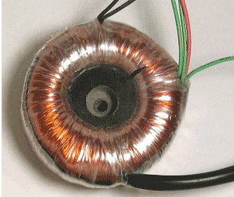

A transformer is a static device which transfers electric power from one circuit to another without change of frequency. The two circuits are not connected to each other electrically rather they are magnetically linked via core of the transformer. There are two windings – primary and secondary wound on both side of the core. Based on transformer construction and design core are of different types. They are : Steel laminated core, solid cores, toroidal cores, air cores, etc. Before discussing about toroidal transformer let us know what is toroid ?
A doughnut shaped object is called a toroid. It has an annular shape. In geometry we call the surface of a toroid as torus. Toroidal transformer consists of a ring shaped core which may be made up of silicon steel generally. Coils both on primary and secondary sides are wound concentrically on toroidal core to cover its maximum surface area. In the range of higher frequencies i.e. between 10 kHz to 100 MHz ferrite toroidal cores are used.
Advantages of toroidal transformer:
- Stray magnetic field is low so it provides quite operation.
- Its weight and size is small, so its simple to construct.
- Efficiency is high.
Disadvantages are as:
- Cost is high.
- Its power capacity is limited.
 by
by